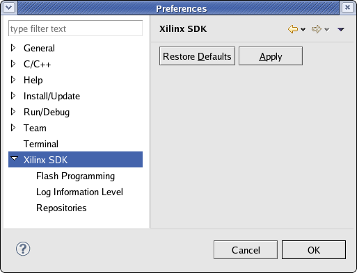

Building applications in SDK
You can customize the behavior of the SDK interface in the Preferences dialog box. Select Window > Preferences to open it, and click Xilinx SDK in the preference page list.

In the Xilinx SDK page of the Preferences dialog box, you can set the following preferences:
In the Flash Programming preference page, you can set your Flash Programming download preferences. When the Do not show flash device support information before programming check box is selected, SDK disables the alert message about supported Flash devices during Flash programming.
In the Log Information Level preference page, you can set the level of log output from SDK on the console. The Log Level defaults to Info, but can also be set to Trace, Error, or Warning. This information can be used to display activities from SDK as commands are run.
The Repositories preference can be used to add, remove or change the order of software repositories in SDK.

Programming parallel Flash memory
Setting up software repositories
Building projects
Copyright © 1995-2010 Xilinx, Inc. All rights reserved.